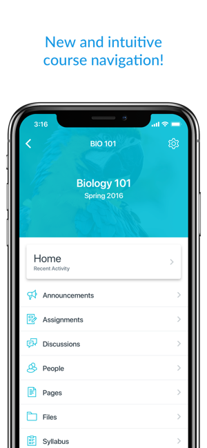
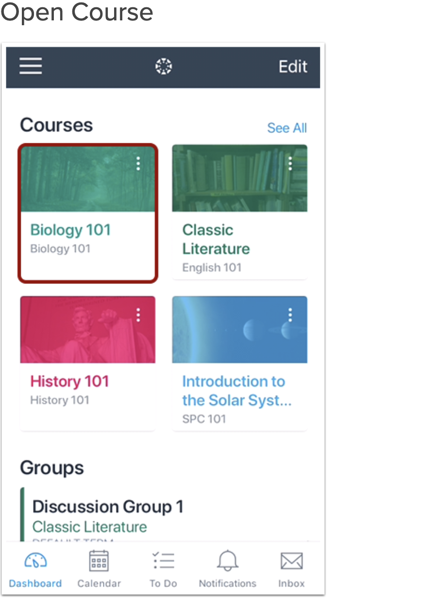
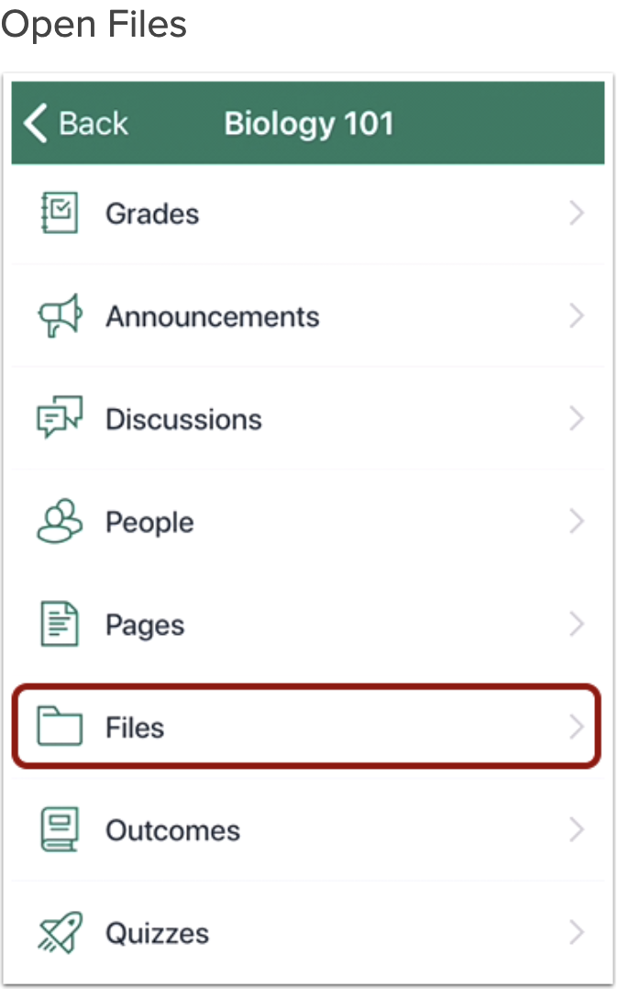
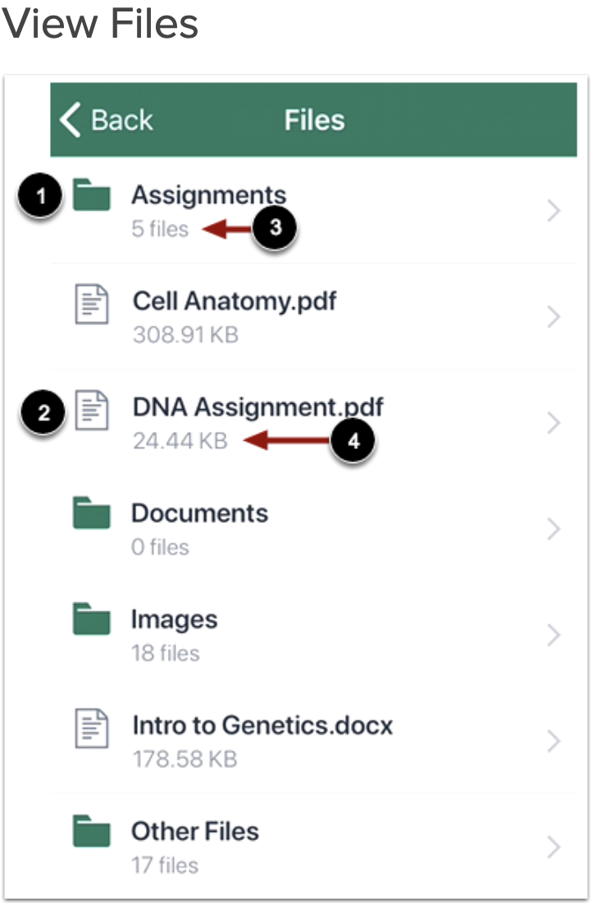
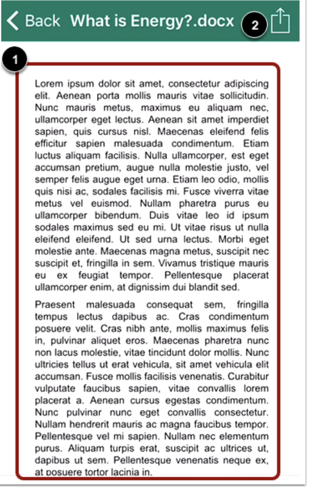
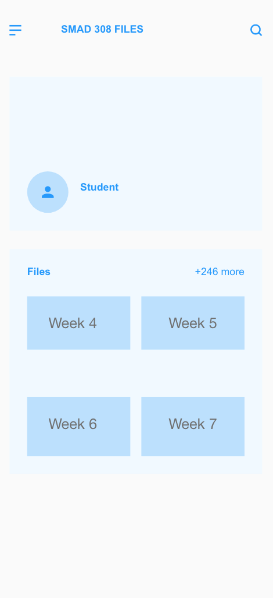
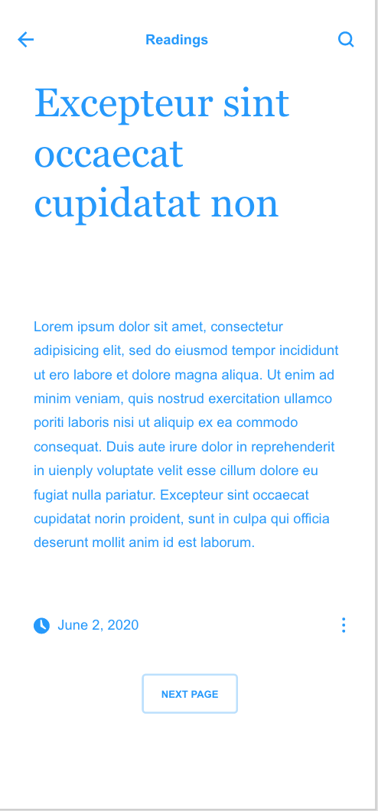
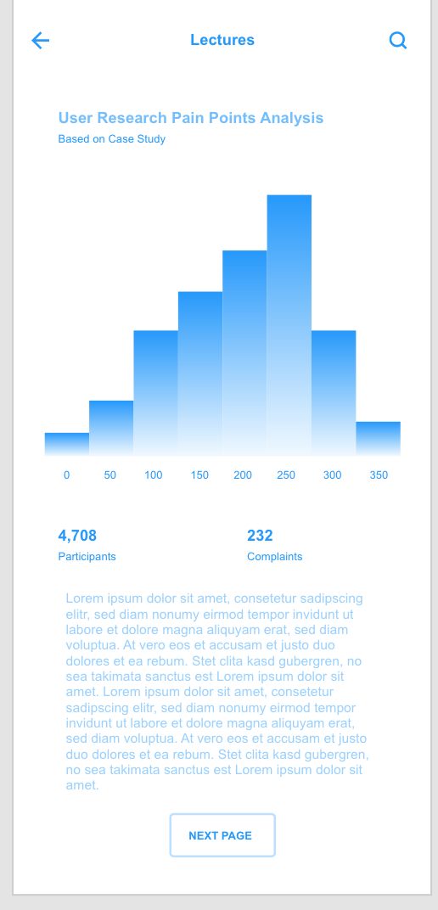

Redesigning the User Interface of the Canvas Mobile Application, a UX Case Study
Written by: Deegan Kelley
Date: September 3rd, 2020.
What is Canvas?
Canvas is a very popular system that is utilized by over 300 universities. It is an innovative way to keep up with coursework and to organize each class into sections. Although many people use the website on their laptops or desktops, with asynchronous online classes, due to COVID-19, it is now more important to have multiple technology options. Many students have downloaded the application to their mobile devices.I came up with this application to redesign because I was curious to see what my peers and other classmates were struggling with.

User Research
The primary users of this website are undergraduate and graduate university students ages 18-30 (some variation if pursuing an adult bachelor’s degree or graduate degree). For this specific study, I researched James Madison University undergraduates because the application, Canvas, is the system that James Madison University utilizes for students to have their course information, ability to submit assignments, tests, quizzes, go onto webex calls, see a course to-do-list, post and respond in discussion boards, announcements, notifications, and to see their most recent grade.

I believe this application needs to be redesigned due to a lack of user friendly flows. Since I am an undergraduate student at James Madison University, and have experienced difficulties with the app, I thought it would be a great application to redesign. Additionally, with COVID-19 and students having several online college courses, it is necessary for there to be a user friendly mobile application.
Design Problem and Analysis
To see what the primary users were struggling with, I constructed a google form and got twenty-six responses. The biggest pain that the results discovered was not being able to open course files through the application. By constructing this google form, I was able to come up with the design problem statement: “University undergraduates and graduates who utilize the mobile application, Canvas, need to have a more user friendly application flow for downloading and viewing files. Below are images of the survey results and the percentages of the pains they were experiencing. Click to the right or the left to see the results.
Pain Point: Complicated File Opening Flow
As mentioned in the survey results, there needs to be a better flow in the file opening process. The main issue is that the files are difficult to locate and open. In addition, the files lack a sense of organization and is not appealing to the user's eye. Below is the process of what the flow currently looks like:
   
Redesign
In order to redesign the application and to make the file opening process more user friendly there needs to be more file cohesion. The redesign would incorporate a style that is efficient and user friendly, like the google drive application. The user would be able to easily click on the course on dashboard, then go to the class files section, and lastly be able to find each file easily. It would be in the order that the professor aligns to the course syllabus. Each folder would represent each week of class to keep it more organized. Additionally, the files can be opened, commented on, and shared like google docs does to ensure there are several options for the student to access the document. The file would be able to be recognized and converted to the application on mobile devices as part of the application instead of it trying to locate the file in a different application or in the web browser. Below is a wireframe of the flow redesigned:
  
This application flow will help to keep the files organized based on the week for each course on canvas. Additionally, the application will successfully open each file through the standardized canvas document file type to ensure usability. Not only would this redesign be more efficient, but the design would be more appealing to the eye and more accessible for mobile devices. With COVID-19, there is a need for this redesign to ensure students are able to do their work and learn from any technology, including mobile devices.